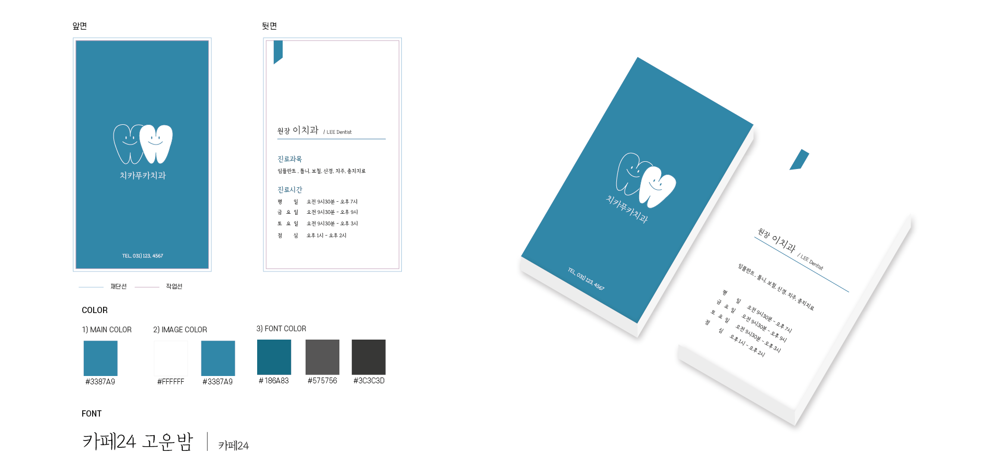

1) WEB DESIGN
디자인툴 illustration와 HTML, CSS, JaveScript, jQuery를 사용하여 기존 페이지를 리디자인 하였다.
2) BUSINESSCART DESIGN
(1) 치카푸카치과
치과진료 중 BluLight의 사용을 빈번히 볼 수 있었다. 이러한 점에서 명함의 메인색을 푸른색 계통으로 하였으며, 치과의 상징인 치아 일러스트를 명함의 앞쪽에 배치하였다.
(2) 옛날옛적식당
오래된 기존의 명함 디자인을 지우고 새롭게 리디자인 하였다. 식당의 메인메뉴인 돔베고기를 일러스트화 시켜 보다 깔끔하게 변경하였다.

3) BANNER DESIGN
(1) Event Banner